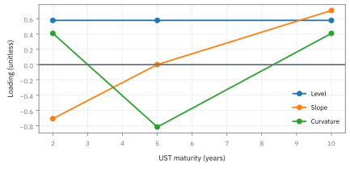
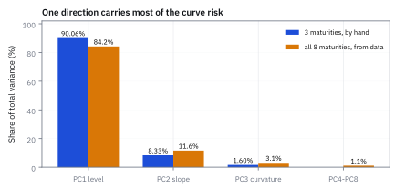
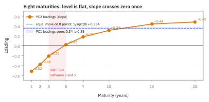
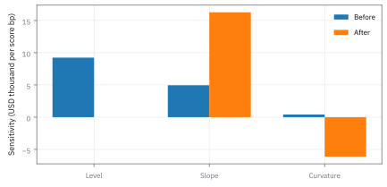
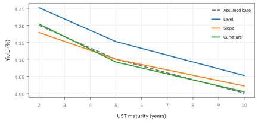
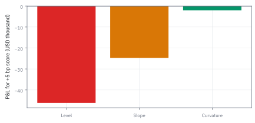

17.4 Principal Component Analysis (PCA)
ความเสี่ยงของเส้นอัตราแปดมิติ จริง ๆ แล้วเป็นสามทิศที่ตั้งฉากกัน
พันธบัตรแปดอายุขยับไปด้วยกันแน่นมาก อายุติดกันมี correlation 0.90 ปลายกับปลาย 0.75 ความเสี่ยงแปดมิตินี้มีกี่มิติจริง และถือ 10 ปี \$100 ล้าน ต้อง short 2 ปีเท่าไรจึงไม่สนใจว่าดอกเบี้ยทั้งเส้นขึ้นหรือลง?
เฉลย: มิติเดียวอธิบายได้ 84 ถึง 90% คือทั้งเส้นขยับพร้อมกัน สามมิติรวมได้ 98.9% และต้อง short พันธบัตร 2 ปี \$448.4 ล้าน สิ่งที่เหลือคือการเดิมพันความชันของเส้นล้วน ๆ
โจทย์ให้อะไรมาบ้าง
เอกสารของคอร์สทำ PCA กับการเปลี่ยนแปลงรายวันของอัตราผลตอบแทนพันธบัตรรัฐบาลแปดอายุ คือ 1, 2, 3, 5, 7, 10, 15 และ 20 ปี ใช้การเปลี่ยนแปลงรายวัน ไม่ใช้ตัวระดับ เพราะระดับดอกเบี้ยเดินไปเรื่อย ๆ ไม่วนรอบค่าเดิม
ใช้ correlation ไม่ใช้ covariance เพราะปลายสั้นแกว่งตามนโยบายดอกเบี้ย ปลายยาวแกว่งตามเงินเฟ้อที่คาด ขนาดต่างกัน ถ้าใช้ covariance ทิศแรกจะถูกอายุที่แกว่งแรงที่สุดครอบงำ กลายเป็นการวัดหน่วย ไม่ใช่วัดรูปแบบ
เพื่อคิดด้วยมือ เลือกตัวแทนสามอายุ 2, 7 และ 20 ปี อายุติดกันมี correlation 0.90 ปลายสุดกับปลายสุด 0.75 และ DV01 ต่อเงินต้น \$100 ล้าน ของพันธบัตร 10 ปีคือ \$8,500 ของ 2 ปีคือ \$1,950
ศัพท์ที่ใช้ในหัวข้อนี้
- Principal Component Analysis (PCA)
- การหมุนแกนข้อมูลไปยังทิศที่แกว่งมากที่สุดตามลำดับ ใช้ลดมิติและแยกทิศทางความเสี่ยงหลักที่ไม่ปนกัน
- yield curve
- ชุดอัตราผลตอบแทนของพันธบัตรที่อายุต่างกัน ณ เวลาเดียวกัน ใช้ติดตามต้นทุนเงินและรูปการเคลื่อนไหวของอัตรา
- basis point
- หนึ่งในร้อยของหนึ่งเปอร์เซ็นต์ ใช้บอกการเปลี่ยนแปลงของอัตราดอกเบี้ย
- correlation
- ความสัมพันธ์ที่ปรับมาตราหารด้วย standard deviation แล้ว ใช้แยกรูปแบบการเคลื่อนไหวร่วมออกจากขนาดความผันผวน
- covariance
- การเคลื่อนไหวร่วมที่ยังมีหน่วยของข้อมูลอยู่ ถ้าใช้ตัวนี้แทน correlation อายุที่แกว่งแรงที่สุดจะครอบงำคำตอบ
- eigenvector
- ทิศพิเศษที่ matrix คูณแล้วได้ทิศเดิมยืดออก ใช้เป็นแกนใหม่ที่ตั้งฉากกัน ในหัวข้อนี้แต่ละทิศคือพอร์ตหนึ่งพอร์ต
- eigenvalue
- ตัวเลขที่ matrix ยืด eigenvector ใช้วัดว่าพอร์ตในทิศนั้นแกว่งเท่าไร
- loading
- ตัวเลขแต่ละช่องของ eigenvector บอกว่าแต่ละอายุขยับมากน้อยแค่ไหนในทิศนั้น เป็นหน่วยการเปลี่ยนอัตรา ไม่ใช่หน่วยเงิน
- trace
- ผลบวกของแนวทแยงของ matrix ซึ่งเท่ากับผลบวกของ eigenvalue เสมอ ใช้ตรวจงาน
- Dollar Value of One Basis Point (DV01)
- เงินที่มูลค่าพันธบัตรเปลี่ยนเมื่ออัตราขยับหนึ่ง basis point ใช้แปลงการเปลี่ยนอัตราเป็นกำไรขาดทุนเป็นเงิน
สัญลักษณ์ที่ใช้ในหัวข้อนี้
| สัญลักษณ์ | ความหมาย | หน่วย |
|---|---|---|
| $\Delta y$ | การเปลี่ยนอัตราผลตอบแทนรายวันของทุกอายุ เป็นหนึ่ง vector | basis points |
| $R$ | correlation matrix ของ $\Delta y$ แนวทแยงเป็น 1 ทุกช่อง | ไม่มีหน่วย |
| $q_i,\lambda_i$ | ทิศที่ $i$ ความยาวหนึ่ง และความผันผวนของพอร์ตในทิศนั้น | ไม่มีหน่วย |
| $Q,\Lambda$ | ตารางที่เรียงทิศเป็นคอลัมน์ และตารางแนวทแยงของ $\lambda_i$ | ไม่มีหน่วย |
| $n$ | จำนวนอายุ ซึ่งเท่ากับผลบวกของ $\lambda_i$ เมื่อใช้ correlation | ตัว |
| $\Sigma,d$ | covariance matrix และ DV01 vector ในตัวอย่างที่สอง | bp กำลังสอง, USD ต่อ bp |
ขั้นที่ 1 — ลองด้วยมือ: เดาทิศที่ปลายสองข้างสวนกัน
matrix นี้อ่านจากมุมล่างขวาย้อนขึ้นไปได้ matrix เดิม ทิศพิเศษจึงมีได้แค่สองแบบ แบบปลายเท่ากัน $(x,y,x)$ กับแบบปลายตรงข้ามและกลางเป็นศูนย์ ลองแบบหลังก่อน
คูณ matrix กับ $v$ แล้วได้ $v$ เดิมคูณ 0.25 นั่นคือนิยามของ eigenvector ตรงตัว ไม่ได้เดาสุ่ม การพลิกลำดับอายุสั้นกับยาวให้ matrix เดิม ทิศพิเศษจึงต้องพลิกแล้วได้ตัวเองหรือได้ลบของตัวเอง
เครื่องหมายคือบวก ศูนย์ ลบ พอร์ตนี้ได้เมื่อดอกเบี้ยสั้นขึ้นและยาวลง คือความชันของเส้น และ $\lambda_2$ เท่ากับ 1 ลบ correlation ของปลายสองข้างพอดี ยิ่งปลายเกาะกันแน่น ความเสี่ยงเรื่องความชันยิ่งเล็ก
ขั้นที่ 2 — อีกสองตัวจากสมการกำลังสอง
ใส่แบบปลายเท่ากัน $(x,y,x)$ แถวแรกกับแถวสามให้สมการเดียวกัน ปัญหาสามตัวแปรจึงยุบเหลือสอง
สองสมการกลางคือระบบ 2 คูณ 2 ที่มีตัวคูณ 1.75, 0.90, 1.80 และ 1 ตั้ง determinant ของมันเป็นศูนย์ได้สมการกำลังสอง ราก 7.0425 มาจาก 2.75 ยกกำลังสอง 7.5625 ลบ 4 คูณ 0.13
ตาราง 2 คูณ 2 นี้ไม่สมมาตร เพราะพับปลายสองข้างเข้าหากันแล้ว ตัวกลางเห็นปลายทั้งสองข้าง 0.90 บวก 0.90 เป็น 1.80 ส่วนปลายแต่ละข้างเห็นตัวกลางครั้งเดียว มันแค่เปลี่ยนฐาน ไม่ได้เปลี่ยนปัญหา
ตัวตรวจคือแถวสุดท้าย ผลบวกของ eigenvalue ต้องเท่ากับผลบวกแนวทแยงของ $R$ ซึ่งคือ 3 พอดี ราก 7.0425 คิดมือได้ 2.65 ยกกำลังสองได้ 7.0225 ขาด 0.02 เติม 0.02 หาร 5.30 ได้ 2.65377
ขั้นที่ 3 — loading แล้วอ่านเครื่องหมาย
จากแถวแรกของตาราง 2 คูณ 2 ได้ $y=(\lambda-1.75)x/0.90$ ตั้ง $x=1$ แล้วปรับความยาวเป็นหนึ่ง
$q_1$ เป็นบวกทุกช่องและขนาดใกล้กัน ทั้งเส้นขึ้นลงพร้อมกัน คือระดับหรือ level $q_3$ ปลายบวก กลางลบ คือท้องเส้นนูนหรือยุบ เรียกว่า curvature และสามทิศตั้งฉากกันทุกคู่ ตามแถวสุดท้าย
วิธีอ่านเร็ว นับว่าเดินจากอายุสั้นไปยาวแล้วเครื่องหมายสลับกี่ครั้ง ไม่สลับคือ level สลับครั้งเดียวคือ slope สลับสองครั้งคือ curvature ถ้าโปรแกรมให้เครื่องหมายกลับทั้งชุด ก็เป็นทิศเดียวกันมองกลับด้าน เพราะลบของ eigenvector ก็เป็น eigenvector
ขั้นที่ 4 — ทำไมทิศที่แกว่งมากที่สุดต้องเป็น eigenvector
ถามให้ตรง ทิศความยาวหนึ่งทิศไหนที่พอร์ตบนทิศนั้นแกว่งมากที่สุด ต้องบังคับความยาว ไม่งั้นยืดทิศออกก็ได้ค่ามากขึ้นไม่สิ้นสุด
สร้าง Lagrangian ตามหัวข้อ 12.4 หา derivative แล้วตั้งเป็นศูนย์ สิ่งที่เหลือคือนิยามของ eigenvector จากหัวข้อ 7.6 และความผันผวนในทิศนั้นเท่ากับ $\lambda$ พอดี ทิศแรกจึงเป็นทิศที่ $\lambda$ ใหญ่ที่สุด
$z$ คือพิกัดของแต่ละวันบนแกนใหม่ เพราะแกนตั้งฉากกัน พิกัดบนแกนต่างกันจึงไม่มีความสัมพันธ์เชิงเส้นกัน แต่ไม่ได้แปลว่าเป็นอิสระต่อกัน
ขั้นที่ 5 — แปลง eigenvalue เป็นสัดส่วนที่อธิบายได้
สัดส่วนที่ทิศหนึ่งอธิบายคือ eigenvalue ของมันหารด้วยผลบวกทั้งหมด ซึ่งเมื่อใช้ correlation คือจำนวนอายุพอดี
แนวทแยงของ correlation matrix เป็น 1 ทุกช่อง ผลบวก eigenvalue จึงเป็นจำนวนตัวแปร อ่านเป็นเปอร์เซ็นต์ได้ทันทีโดยไม่ต้องรู้ความผันผวนจริง ความเสี่ยงสามมิติจึงเป็นมิติเดียวเป็นหลัก รู้ว่าวันนี้ระดับดอกเบี้ยขยับเท่าไร ก็อธิบายการเคลื่อนไหวได้ 90%
เกณฑ์ที่ใช้บ่อยคือเก็บทิศที่ $\lambda$ มากกว่า 1 เพราะมันอธิบายได้มากกว่าตัวแปรเดี่ยวหนึ่งตัว ที่นี่มีแค่ทิศแรกที่ผ่าน ถ้า correlation ทุกคู่เป็น 1 ทิศแรกจะได้ 100% และอีกสองทิศเป็นศูนย์
Figure 17.4a — สามรูปทรงจาก correlation 0.90 และ 0.75

loading ของสามทิศที่คิดด้วยมือในขั้นที่ 1 ถึง 3 ที่อายุ 2, 7 และ 20 ปี level เป็นบวกทุกจุด slope สลับเครื่องหมายครั้งเดียว curvature สลับสองครั้ง
ขั้นที่ 6 — ผลจริงของทั้งแปดอายุ
PCA เต็มบนแปดอายุในเอกสาร ผลบวก eigenvalue คราวนี้เป็น 8 รูปแบบเดิมทุกประการ
ตัวเลขในวงเล็บคือ $\lambda$ หาร 8 แถวที่สี่คือทิศที่ 4 ถึง 8 รวมกัน ถ้าทั้งแปดอายุขยับเท่ากันเป๊ะ loading ของทิศแรกจะเป็น $1/\sqrt8$ ทุกช่อง ค่าจริง 0.34 ถึง 0.38 เกาะรอบ 0.354 ทิศแรกจึงคือทั้งเส้นขยับพร้อมกันจริง
loading ของทิศที่สองเรียงจาก 1 ถึง 20 ปี สลับเครื่องหมายครั้งเดียวระหว่าง 3 กับ 5 ปี คือ slope ผลบวกกำลังสองได้ 1.0118 ไม่ใช่ 1 พอดีเพราะปัดทศนิยมสองตำแหน่ง ใช้สามทิศแทนแปดมิติครอบคลุม 98.9%
แปดอายุให้ทิศแรก 84.2% ต่ำกว่า 90.06% ของสามอายุ เพราะยิ่งมีจุดมาก เส้นยิ่งมีที่บิดเป็นรูปแปลก ๆ แต่ลำดับและความหมายไม่เปลี่ยน ตัวเลขราว 84, 11 และ 3 พบซ้ำในตลาดพันธบัตรทั่วโลก
Figure 17.4b — สามอายุด้วยมือเทียบแปดอายุจากข้อมูล

สัดส่วน variance ของแต่ละทิศ ตัวอย่างสามอายุได้ 90.06, 8.33 และ 1.60% แปดอายุได้ 84.2, 11.6, 3.1 และ 1.1% ลำดับเหมือนกันทุกประการ
Figure 17.4c — loading ของแปดอายุ

loading ของทิศที่สองเริ่มที่ −0.52 ที่ 1 ปี แล้วขึ้นไปถึง +0.48 ที่ 20 ปี ตัดศูนย์ระหว่าง 3 กับ 5 ปี ทิศแรกอยู่ในแถบ 0.34 ถึง 0.38 รอบเส้น 0.354
ขั้นที่ 7 — สร้างพอร์ตที่ไม่สนใจระดับดอกเบี้ย
ต้องการเดิมพันเรื่องความชันอย่างเดียว ความไวต่อทิศแรกของพอร์ตต้องเป็นศูนย์ ความไวของแต่ละขาคือ DV01 คูณ loading ของทิศแรกที่อายุนั้น
ขายาวถือพันธบัตร 10 ปี \$100 ล้าน ความไวต่อทิศแรก \$3,060 ต่อหนึ่ง basis point ของทิศนั้น ขาสั้นทุก 100 ล้านที่ short ลดได้ 682.5 จึงต้อง short 4.4835 หน่วยของ 100 ล้าน หรือ \$448.4 ล้าน แถวรองสุดท้ายตรวจว่าขาสั้นให้ 3,060 หักล้างพอดี
ทำไมต้อง short ถึง 4.5 เท่าของขายาว พันธบัตร 2 ปีมี DV01 แค่ 1,950 เทียบกับ 8,500 เล็กกว่า 4.36 เท่า และ loading ต่างกันนิดหน่อยอีก 1.029 เท่า สิ่งที่เหลือหลัง hedge คือความไวต่อทิศที่สอง ถ้าเส้นชันขึ้นพอร์ตนี้ขาดทุน ถ้าแบนลงได้กำไร ซึ่งคือเดิมพันที่ตั้งใจจริง
ขั้นที่ 8 — ตัวอย่างที่สอง: สร้าง matrix จากแกนที่รู้คำตอบ
ย้อนทางกัน เลือกสามทิศและขนาดเอง แล้วประกอบเป็น covariance matrix ของพันธบัตร 2, 5 และ 10 ปี หน่วย basis point กำลังสอง จะได้เห็นว่า PCA แกะกลับได้ของเดิม
คูณแถวแรกของ $\Sigma$ กับ $q_1$ ได้ 81 คูณช่องแรกของ $q_1$ พอดี matrix แค่ยืดทิศนี้ 81 เท่าโดยไม่หมุน ผลบวกแนวทแยง 95 บวก 83 บวก 95 หาร 3 ได้ 91 เท่ากับผลบวก eigenvalue ที่เลือก ทิศแรกอธิบาย 89.01% ทิศสอง 9.89% ทิศสาม 1.10%
ขั้นที่ 9 — variance เล็กไม่ได้แปลว่ากำไรขาดทุนเล็ก
พอร์ตมี DV01 ของพันธบัตร 2, 5 และ 10 ปีเท่ากับ 2,000, 5,000 และ \$9,000 ต่อ basis point แปลงแต่ละทิศเป็นเงินด้วยการคูณ DV01 กับ loading
ถ้าทั้งเส้นขึ้น 5 basis points พอร์ตเสีย 5 คูณ 16,000 เท่ากับ \$80,000 เพิ่มสถานะที่ให้ DV01 ลบ 16,000 ที่อายุ 2 ปี ผลรวมกลายเป็น $d'$ ความไวต่อทิศแรกเป็นศูนย์
แต่ความไวต่อทิศที่สองโตจาก 4,950 เป็น \$16,263 ต่อหน่วยของทิศนั้น ทิศที่สองมี eigenvalue แค่ 9 จาก 91 แต่หลัง hedge มันคือความเสี่ยงหลักของพอร์ต การทิ้งทิศเล็กเพราะ variance เล็กจึงอาจทิ้งความเสี่ยงที่เหลืออยู่จริง
Figure 17.4d — ความไวก่อนและหลัง hedge ทิศแรก

ความไวของตัวอย่างที่สองต่อหนึ่งหน่วยของแต่ละทิศ ก่อนและหลังเพิ่ม DV01 ลบ 16,000 ที่อายุ 2 ปี ทิศแรกเหลือศูนย์ แต่ทิศที่สองโตขึ้นเป็น 16,263
Figure 17.4e — เส้นอัตราขยับตามแต่ละทิศ

เส้นสมมติ 4.2, 4.1 และ 4.0% ถูกขยับด้วยหนึ่ง standard deviation ของแต่ละทิศในตัวอย่างที่สอง คือ 9, 3 และ 1 basis points ตามรากของ 81, 9 และ 1
Figure 17.4f — ขยับทิศละ 5 basis points ได้เงินคนละขนาด

กำไรขาดทุนของพอร์ต DV01 2,000, 5,000 และ 9,000 เมื่อพิกัดของแต่ละทิศขยับ 5 หน่วย ทิศที่สามมี eigenvalue แค่ 1 แต่ยังสร้างเงินได้ ต้องคูณ loading ผ่านสถานะจริงก่อนตัดสินใจ
คำตอบ — PCA ของเส้นอัตราและพอร์ตที่ไม่สนใจระดับ
คำถาม: พันธบัตรแปดอายุขยับไปด้วยกันแน่นมาก อายุติดกันมี correlation 0.90 ปลายกับปลาย 0.75 ความเสี่ยงแปดมิตินี้มีกี่มิติจริง และถือ 10 ปี \$100 ล้าน ต้อง short 2 ปีเท่าไรจึงไม่สนใจว่าดอกเบี้ยทั้งเส้นขึ้นหรือลง?
ของที่มี: ขั้นที่ 1 ถึง 7
1 ตัวอย่างสามอายุ eigenvalue คือ 2.70189, 0.25 และ 0.04811 รวมเป็น 3 เท่ากับผลบวกแนวทแยง
2 สัดส่วนที่อธิบายคือ 90.06, 8.33 และ 1.60% ของจริงแปดอายุคือ 84.2, 11.6 และ 3.1% สามทิศรวม 98.9%
3 ทิศแรก (0.566, 0.599, 0.566) คือ level ทิศสอง (0.707, 0, −0.707) คือ slope ทิศสาม (0.423, −0.801, 0.423) คือ curvature
4 ถือ 10 ปี \$100 ล้าน ต้อง short 2 ปี \$448.4 ล้าน
ตรวจเองใน 10 วินาที: 1 − 0.75 = 0.25 และ 3,060 หาร 682.5 ได้ 4.48
แปลว่าอะไร: รายงานความเสี่ยงของเส้นอัตราด้วยสามตัวเลขที่ตั้งฉากกันแทนแปดตัว เสียข้อมูลแค่ 1.1% และเลือก hedge ได้ทีละทิศ แต่ PCA มาจาก correlation ในอดีต วิกฤตที่ปลายสั้นถูกตรึงแต่ปลายยาวแกว่ง ทำให้แกนเปลี่ยนได้ทันที
ตัวอย่างที่สอง — hedge ทิศแรกแล้วเหลืออะไร
คำถาม: พอร์ตพันธบัตร 2, 5 และ 10 ปีมี DV01 รวม \$16,000 ต่อ basis point ถ้าทั้งเส้นขึ้น 5 basis points จะเสียเท่าไร และถ้า hedge ทิศแรกทิ้ง ความเสี่ยงที่เหลือหน้าตาเป็นอย่างไร?
ของที่มี: ขั้นที่ 8 และ 9
1 ทั้งเส้นขึ้น 5 basis points เสีย \$80,000
2 เพิ่ม DV01 ลบ 16,000 ที่อายุ 2 ปี ความไวต่อทิศแรกเป็นศูนย์
3 ความไวต่อทิศที่สองโตจาก 4,950 เป็น \$16,263 ต่อหน่วย
ตรวจเองใน 10 วินาที: −14,000 + 5,000 + 9,000 = 0
แปลว่าอะไร: การ hedge ทิศใหญ่ย้ายความเสี่ยงไปอยู่ในทิศเล็กได้ ต้องดูความไวต่อทุกทิศหลัง hedge เสมอ
กับดัก: loading ไม่ใช่สัดส่วนเงินลงทุน
loading บอกน้ำหนักในหน่วยการเปลี่ยนอัตรา ไม่ใช่หน่วยเงิน คนที่อ่าน $q_1=(0.566, 0.599, 0.566)$ แล้วซื้อพันธบัตรสามตัวในสัดส่วนนั้นด้วยเงิน จะไม่ได้พอร์ตของทิศแรกเลย เพราะ DV01 ของอายุสั้นกับยาวต่างกันถึง 4.36 เท่า ต้องแปลงเป็นเงินต้นด้วยการหาร loading ด้วย DV01 ก่อนส่งคำสั่ง อย่างที่ทำในขั้นที่ 7
PCA คำนวณจาก correlation ในอดีต ช่วงวิกฤตที่อัตราสั้นถูกตรึงที่ศูนย์แต่อัตรายาวยังแกว่ง ความสัมพันธ์เปลี่ยนกะทันหัน ชุด loading ล้าสมัยพร้อมกันหมด โต๊ะเทรดจึงคำนวณใหม่ต่อเนื่องแล้วตรวจว่าสัดส่วนยังนิ่งหรือไม่
ที่มาที่ไป: ลดหลายมิติให้เหลือสาม โดยแทบไม่เสียอะไร
Karl Pearson วางแนวคิดนี้ไว้ในปี 1901 และ Harold Hotelling พัฒนาเป็นรูปแบบที่ใช้กันในปี 1933 ปัญหาที่มันแก้คือ เมื่อตัวแปรจำนวนมากขยับพร้อมกัน การดูทีละตัวเห็นแต่เรื่องเดียวกันซ้ำ ๆ
ในการเงิน ที่ใช้ชัดที่สุดคือเส้นอัตราผลตอบแทน ซึ่งมีอายุให้ติดตามเป็นสิบจุด แต่การเคลื่อนไหวเกือบทั้งหมดสรุปได้ด้วยสามทิศ ทั้งเส้นขยับขึ้นลง เส้นชันขึ้นหรือแบนลง และท้องเส้นนูนหรือยุบ งานของ Litterman และ Scheinkman ปี 1991 ทำให้สามคำนี้เป็นภาษาของโต๊ะพันธบัตรทั่วโลก
ข้อจำกัด: วิธีนี้สมมติอะไร และของจริงเป็นอย่างไร
| เรื่อง | วิธีนี้สมมติว่า | ของจริงเป็นอย่างไร | ผลที่ตามมาเวลาใช้งาน |
|---|---|---|---|
| การตีความ | ทิศที่ได้มีความหมายทางเศรษฐกิจ | มันเป็นผลจากคณิตศาสตร์ล้วน ๆ | การตั้งชื่อให้ทิศแล้วเชื่อชื่อนั้น นำไปสู่ข้อสรุปที่ผิด |
| ความนิ่ง | ทิศที่ได้นิ่ง | ทิศที่มีขนาดใกล้กันสลับที่กันเองเมื่อข้อมูลเปลี่ยนนิดเดียว | รายงานความเสี่ยงเปลี่ยนโดยที่พอร์ตไม่ได้เปลี่ยน |
| ทิศที่ทิ้งไป | ทิศเล็ก ๆ ไม่สำคัญ | พอร์ตที่ hedge มาดีแล้วเหลือความเสี่ยงอยู่ในทิศเล็กพอดี | การทิ้งทิศเล็กทำให้มองไม่เห็นความเสี่ยงที่เหลืออยู่จริง |
แถวล่างเป็นกับดักที่ร้ายแรง เพราะเกิดกับพอร์ตที่ดูเหมือนบริหารความเสี่ยงมาดีที่สุด
โค้ดตรวจตัวเลขของหน้านี้ทั้งหมด
import numpy as np
R = np.array([[1, .90, .75], [.90, 1, .90], [.75, .90, 1]])
lam, vec = np.linalg.eigh(R)
lam, vec = lam[::-1], vec[:, ::-1]
assert np.allclose(lam, [2.701885, 0.25, 0.048115], atol=1e-6)
assert np.isclose(lam.sum(), 3) # trace
v = np.array([1, 0, -1])
assert np.allclose(R @ v, 0.25 * v) # the hand guess
assert np.isclose((2.75 + np.sqrt(2.75**2 - 4 * 0.13)) / 2, 2.701885, atol=1e-6)
q1 = np.array([1, 1.05765, 1]); q1 /= np.linalg.norm(q1)
q3 = np.array([1, -1.89099, 1]); q3 /= np.linalg.norm(q3)
assert np.allclose(np.abs(vec[:, 0]), q1, atol=1e-5) and np.allclose(np.abs(vec[:, 2]), np.abs(q3), atol=1e-5)
assert abs(q1 @ q3) < 1e-5
assert np.allclose(lam / 3, [0.900628, 0.083333, 0.016038], atol=1e-6)
share8 = np.array([84.2, 11.6, 3.1, 1.1]) # all 8 maturities
assert np.isclose(share8.sum(), 100) and np.isclose(share8[:3].sum(), 98.9)
assert np.isclose(1 / np.sqrt(8), 0.35355, atol=1e-5)
pc2 = np.array([-0.52, -0.38, -0.21, 0.02, 0.18, 0.31, 0.44, 0.48])
assert np.isclose((pc2**2).sum(), 1.0118) and (np.diff(np.sign(pc2)) != 0).sum() == 1
N = 8500 * 0.36 / (1950 * 0.35) # PC1-neutral hedge
assert abs(N - 4.4835) < 1e-4 and abs(100 * N - 448.35) < 0.01
assert abs(448.4 * 19.5 * 0.35 - 3060) < 1
Q = np.column_stack([np.ones(3) / np.sqrt(3), np.array([-1, 0, 1]) / np.sqrt(2),
np.array([1, -2, 1]) / np.sqrt(6)]) # example two
S = Q @ np.diag([81, 9, 1]) @ Q.T
assert np.allclose(S, np.array([[95, 80, 68], [80, 83, 80], [68, 80, 95]]) / 3)
d, d2 = np.array([2000, 5000, 9000]), np.array([-14000, 5000, 9000])
assert 5 * d.sum() == 80_000 and abs(d2 @ Q[:, 0]) < 1e-9
assert round(d @ Q[:, 1]) == 4950 and round(d2 @ Q[:, 1]) == 16263โค้ดตรวจ eigenvalue และ loading ของสามอายุที่คิดด้วยมือ ตัวเลขของแปดอายุ การ hedge ทิศแรกด้วยพันธบัตร 2 ปี \$448.4 ล้าน และตัวอย่างที่สองที่สร้าง matrix จากแกนที่รู้คำตอบ
สรุปที่ใช้ได้จริง
- ทำ PCA บน correlation ของการเปลี่ยนแปลงรายวัน ผลบวก eigenvalue จะเท่ากับจำนวนอายุ อ่านเป็นเปอร์เซ็นต์ได้ทันที
- สามอายุด้วยมือได้ 90.06, 8.33 และ 1.60% แปดอายุจริงได้ 84.2, 11.6 และ 3.1% รูปทรงคือ level, slope และ curvature เสมอ
- นับการสลับเครื่องหมายของ loading ไม่สลับ สลับหนึ่งครั้ง สลับสองครั้ง คือสามทิศตามลำดับ
- แปลง loading เป็นเงินผ่าน DV01 ก่อนเทรด ถือ 10 ปี \$100 ล้าน ต้อง short 2 ปี 448.4 ล้าน จึงเป็นกลางต่อระดับ
- หลัง hedge ทิศใหญ่ ความเสี่ยงอาจไปกองอยู่ในทิศเล็ก ต้องดูทุกทิศอีกครั้ง